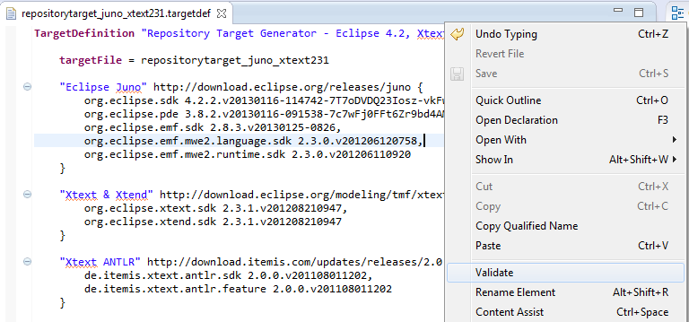
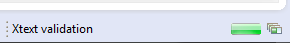
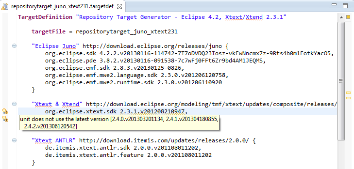
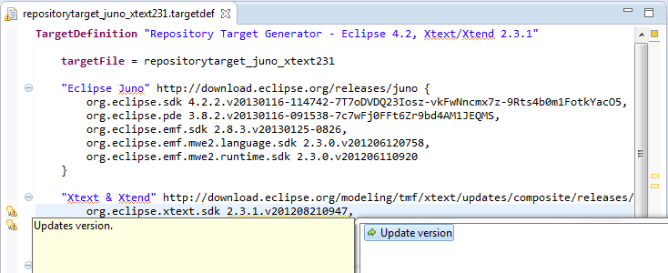

Repository Target Generator
Editor and Generator for .target and category.xml
Project maintained by joergreichert Hosted on GitHub Pages — Theme by mattgraham
Update site: http://joergreichert.github.io/RepositoryTargetGenerator/updatesite/
After having defined the URL of a repository you get auto completion for the features resp. plug-ins contained in this P2 repository or update site.
Having a plug-in selected you can further trigger auto completion of the versions the selected element is available in.

There is a context menu entry "Validate" to check the URLs, categoryIds and versions in the given target definition.

These validation take some time as the repositories have to be visited thus this process runs in background.

For non existing URIs, categoryIds and versions there are produced error markers, if there are newer versions there are warn markers created.

For the warn markers there are offered quickfixes to update the current version with the last available one.

When saving the targetdef file a target file and a category.xml file are generated within the projects's src-gen folder. The name of the generated target file you can influence by specifying the target file name inside the targetdef file.